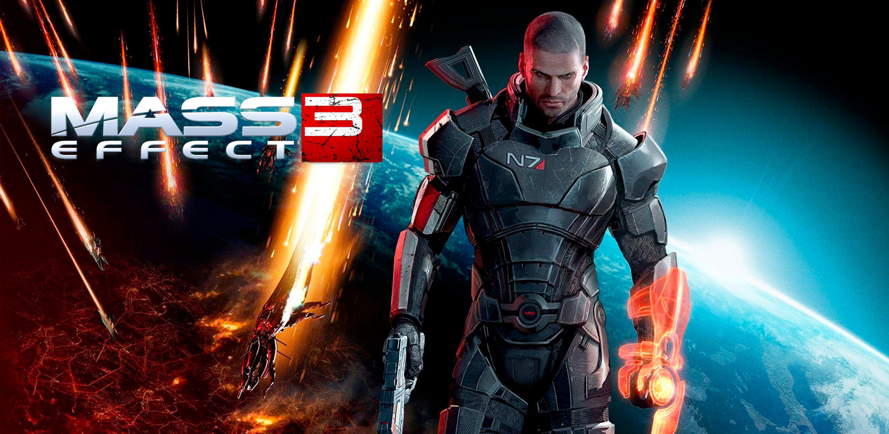
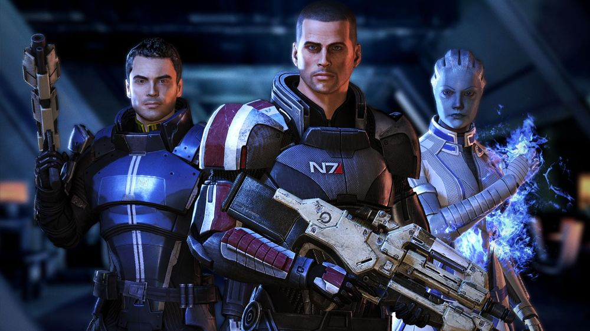

Mass Effect 3 is 2012 action role-playing game developed by Bioware and published by Electronic Arts. The third major entry in the Mass Effect series and the final installment of the original trilogy, it was released in March 2012 for Windows, Xbox 360, and PlayStation 3. A Wii U version of the game, entitled Mass Effect 3: Special Edition was later released as a launch title on November 18, 2012, which notably supported Nintendo Network connection features for multiplayer interaction. The game is set within the Milky Way Galaxy in 2186, where galactic civilization is invaded by a very advanced machine race of synthetic-organic starships known as Reapers.
Similar to Mass Effect 2, the player can import a completed saved game into Mass Effect 3 that influences the plot by taking previous decisions into account.
In general, Mass Effect 3 revolves around increasing military strength by completing missions and gathering recourses.
As Bioware designed the game to be accessible to both old and new players, many of the series’ traditional gameplay elements remain, such as cover-based third-person shooting, but new aspects were introduced as well. Players can now switch between various tactical loadouts on the fly, and a new multiplayer component was added to the experience. The game’s score was written by a variety of composers, who aimed for a balance between the orchestral sound of Mass Effect 2 and the synthesizer-driven sound of the first Mass Effect. Mass Effect 3 also supports variety of downloadable content packs, ranging from minor in-game items to more significant plot-related missions. Notable packs include From Ashes, Leviathan, Omega, and Citadel.
Mass Effect 3 received critical acclaim for its art direction, characters, emotional depth, improved combat, soundtrack, and voice acting. However, its ending was poorly received by fans, who felt that it did not meet expectations. In response to the controversy, Bioware released the Extended Cut pack, which expands upon the original ending. The game received several year-end awards, including Best RPG at the Spike Video Game Awards and the D.I.C.E. Award for Role-Playing Game of the Year. Like its predecessors, its been considered one of the greatest video games ever made. A standalone sequel, Mass Effect: Andromeda, was released in March 2017 with mixed reviews but mostly negative. In May 2021, Mass Effect 3 was remastered as part of the Mass Effect Legendary Edition.
Mass Effect 2 is an Action role-playing game in which the player takes control of Commander Shepard from a third-person perspective. Shepard’s gender, appearance, military background, combat training, and first name are determined by the player before the game begins. If the player has a completed saved game from Mass Effect 2, the character from that game can be imported. By importing an old character, decisions from prior Mass Effects titles are carried over which impacts the plot of Mass Effect 3. The overworld and classes are similar to previous installments but updated.

Mass Effect 3 begins in 2186, six months after the main events of Mass Effect 2. The galactic community lives in fear of an invasion by Reapers, a highly advanced machine race of synthetic-organic starships that are believed to eradicate all organic civilization every 50.000 years. Meanwhile other alien-races and humans are having their own problems, the krogan face extinction, the quarians are preparing to take back their homeworld from the geth, and the human-supremacist group Cerberus are regrouping after their temporary alliance with Shepard. Commander Shepard must help the other alien-races and gain allies in order to stand a chance against the Reapers.
© 2026 HGH